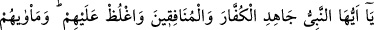
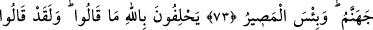
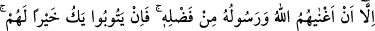
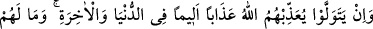
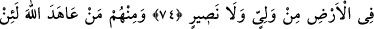
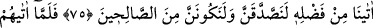
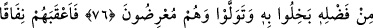
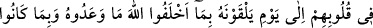
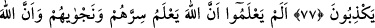
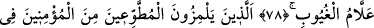
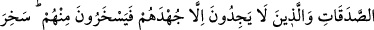
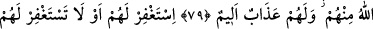
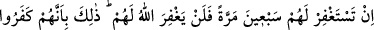
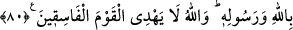
KÂFİRLER VE MÜNÂFIKLAR
73. Ey Peygamber! Kâfirlerle ve münâfıklarla cihâd et, onlara sert davran.
Onların varacakları yer cehennemdir. Ne kötü bir varış yeridir o!
74. Söylemediklerine dair Allah’a yemin ediyorlar. Halbuki o küfür sözünü
söylediler, müslüman olduktan sonra inkar ettiler, başaramadıkları bir şeye
yeltendiler. Onlar, Allah ve Rasûlü’nün, Allah’ın lutfiyle kendilerini zengin
etmesinden başka bir şeyi kerih görmediler. Eğer tevbe ederlerse kendileri için
daha iyi olur. Yok eğer yüz çevirirlerse Allah onlara dünyada da, âhirette de acı bir
biçimde azab edecektir. Yeryüzünde onların ne dostu, ne de yardımcısı vardır.
75. Onlardan kimi de: “Eğer Allah bize fazlından verirse elbette sadaka
vereceğiz ve salihlerden olacağız.” diye Allah’a and içti.
76. Ne zaman ki Allah, lütfundan onlara verdi, O’na cimrilik edip yüz çevirdiler.
Onlar yüz çeviren kimselerdir.
77. Kendisine verdikleri sözden döndüklerinden ve yalan söylediklerinden dolayı
Allah, kendisi ile karşılaşacakları güne kadar onların kalplerine ikiyüzlülük